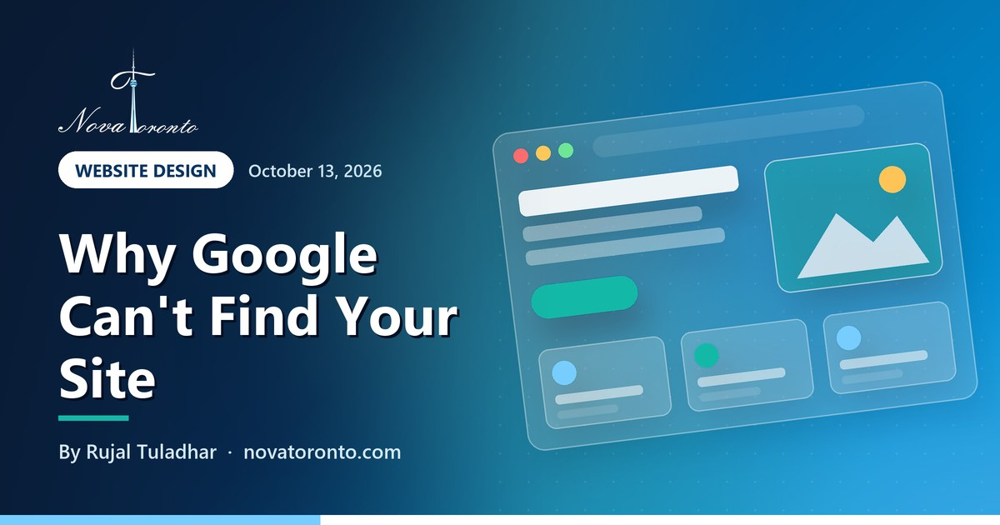

Website not showing up on Google? 7 checks for Ontario businesses
Published October 13, 2026 • By Rujal Tuladhar

You type your business name into Google and your website is nowhere. Or it shows up, but only on page four. Those are two different problems with two different fixes, and many owners lose weeks treating one as the other.
The first problem is indexing: Google has not added your pages to its index, so they cannot appear for anything. The second is ranking: your pages are in the index, but other pages win the search. This guide walks through seven checks, in the order I run them for Ontario clients, using Google's own documentation. The first four take about 15 minutes and need nothing more than a browser and your website address.
Start with site:yourdomain.ca
Google's own quick check for whether pages are indexed
One stray noindex tag
Is enough for Google to drop a page from results
A few weeks for a new site
Google says it can take that long to notice a new site
Search Console names the reason
The Page indexing report says why each page is left out
Business Profile for your name
Link your site so it shows when people search your business
Website not showing up on Google? 7 checks for Ontario businesses at a glance — the short version.
Check 1: Is Google indexing your site at all?
Open Google and search site:yourdomain.ca (your own domain, no spaces). Google's getting started guide gives this query as the way to see whether your pages are already indexed. If you see a list of your pages, you are indexed and your problem is ranking: skip to check 6. If you see nothing, keep going.
Two cautions. Google notes that the site: operator does not necessarily return every indexed URL, so a short list is not proof of a problem on its own. And the same page says it can take a few weeks for Google to notice a new site or changes to an existing one. If you launched last week on a brand-new domain with no links pointing to it, an empty result may simply mean Google has not found you yet.
Check 2: Look for a noindex tag left on from the build
A common reason a finished site stays invisible is a setting left on from development. A noindex rule tells search engines not to index a page, and Google's documentation on blocking indexing says that when Googlebot sees it, Google drops the page from results entirely, even if other sites link to it.
To check, open your homepage, right-click, choose View Page Source and search the page for noindex. If you find <meta name="robots" content="noindex"> in the head of the page, that is your culprit. The rule can also be sent as an X-Robots-Tag HTTP header, which you will not see in the source; check 5 catches that case.
Check 3: Make sure robots.txt is not blocking Google
Visit yourdomain.ca/robots.txt. This small file tells crawlers which URLs they may access. A line reading Disallow: / under User-agent: * blocks every crawler from the whole site.
Google's robots.txt introduction says the file is mainly for managing crawler traffic and is not a way to keep a page out of Google: a blocked URL can still appear in results, just without a description. That is the tell-tale symptom. If your listing shows up with no snippet text, robots.txt is probably blocking the page. The noindex documentation adds a second trap: if robots.txt blocks a page, Google never sees a noindex rule on it, so the two settings do not combine the way people expect.
Check 4: Give Google a sitemap and a way in
A sitemap is a file listing the pages you want found. Google's sitemap overview says you might not need one if your site is small (about 500 pages or fewer) and every page is linked from the others. It also says a sitemap helps when your site is new and has few external links, which describes most new small-business sites. A sitemap does not guarantee every page will be crawled and indexed, but Google says most sites benefit from having one.
Many website platforms create a sitemap automatically, often at yourdomain.ca/sitemap.xml. Check that the address loads, then submit it in Search Console (next check). New domains also gain from a few genuine links pointing in: your Google Business Profile, your industry association listing, a supplier's dealer page.
Check 5: Use Search Console to get Google's own answer
Google Search Console lets you submit sitemaps and individual URLs for crawling, see which queries bring people to your site and get email alerts when Google finds issues. Add your site as a property: a Domain property covers every subdomain and both http and https, but needs a DNS record at your domain registrar to verify; a URL-prefix property covers only addresses that start with the exact prefix you enter.
Once verified, open the Page indexing report. It lists pages that are not indexed and why, with labels such as URL marked 'noindex', URL blocked by robots.txt, Crawled - currently not indexed and Discovered - currently not indexed. That label tells you which of the checks above applies.
Then paste your homepage address into the URL Inspection tool. It shows whether the page is indexed, when Google last crawled it and whether crawling and indexing were allowed, and it can test the live version. After a fix, click Request indexing. Google's help says a request does not guarantee the page will be indexed, that there is a daily limit on requests, and that for many new or updated pages a sitemap is the better route.
Check 6: Indexed but buried? Work on ranking, not indexing
If site: shows your pages but you never appear for the searches that matter, the problem is ranking, and requesting indexing again will not help. Google's SEO starter guide points to the basics: think about the words a customer would actually type, and give each page a title that is unique, clear, concise and accurate. A plumber whose homepage title is just "Home" gives Google little to work with; "Emergency plumber in Mississauga" plus the business name gives it the service and the place.
Search Console's Performance report shows the queries your site already appears for, with clicks, impressions and average position. Be patient after changes: the starter guide says some take effect in a few hours and others could take several months, and suggests waiting a few weeks before judging.
Check 7: Link your Google Business Profile so your name search works
When people search your business name, Google can show your Business Profile alongside your website, and many people tap the profile first. Verify the profile first: Google chooses the method (video, phone or text, email, live video call or postcard), reviews usually take up to 5 business days, and some profiles verify instantly through Search Console website verification. Then edit the profile and enter your full website address, including https://. Google's help adds that you should make sure Googlebot is not blocked on your site, and that edits are reviewed before they appear.
For local searches, Google's local ranking help says results are based on relevance, distance and prominence, and that complete, accurate information, verification and more reviews can help. Links from other websites count towards prominence too.
The bottom line
Run the checks in order. If site: shows nothing, look for noindex, robots.txt blocks and a missing sitemap, then let Search Console tell you the exact reason. If site: shows your pages, stop chasing indexing and work on titles, content and your Business Profile. Most of the fixes take minutes; the waiting is the slow part.
If you would rather have someone check it for you, our website design packages start at $900 for three pages, and $1,800 gets five pages with analytics and SEO, plus applicable tax. For budgets, see what a $1,000, $2,000 and $5,000 website gets you in Ontario; if you want paid traffic while SEO builds, read how much a Toronto business should spend on Google Ads; and if you built the site yourself, where AI website builders break is worth a look.
Common questions
Why is my website not showing up on Google?
Either Google has not indexed it, or it is indexed but ranks poorly. Search site:yourdomain.ca to tell which. If nothing appears, check for a noindex tag, a robots.txt file blocking crawlers and a missing sitemap, then use the Page indexing report in Search Console to see Google's stated reason. A brand-new site can also take a few weeks to be noticed.
How long does it take for a new website to show up on Google?
Google says it can take a few weeks to notice a new site or changes to an existing one. Submitting a sitemap and requesting indexing in Search Console help Google find pages, but Google says neither guarantees indexing.
How do I get my website to show when people search my business name?
Verify your Google Business Profile and add your full website address, including https://, to the profile. Google reviews edits before they go live. Make sure Googlebot is not blocked on your site, and give your homepage a clear title that includes your business name.
Does requesting indexing in Search Console get my page on Google?
Not on its own. The URL Inspection tool can queue a page for crawling, but Google says a request does not guarantee indexing and there is a daily limit. Fix any noindex or robots.txt problem first, and submit a sitemap if you have many pages.
Want this working in your business?
Book a free 15-minute call and we'll map out which of these would actually save you time and win you customers.
Book a Free ConsultationNew to AI? Take our free 7-lesson AI course for beginners.
Sources: Google Search Central: Get your website on Google • Google Search Central: Block Search indexing with noindex • Google Search Central: Introduction to robots.txt • Google Search Central: Learn about sitemaps • Google Search Central: SEO starter guide • Google Search Console: About Search Console • Search Console Help: Add a website property • Search Console Help: Page indexing report • Search Console Help: URL Inspection tool • Search Console Help: Performance report (Search results) • Google Business Profile Help: Verify your business • Google Business Profile Help: Edit your Business Profile • Google Business Profile Help: Tips to improve your local ranking